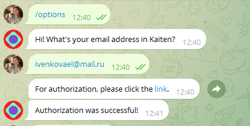
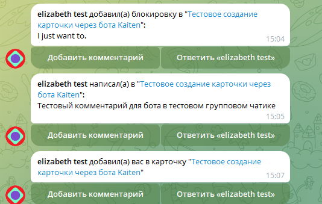
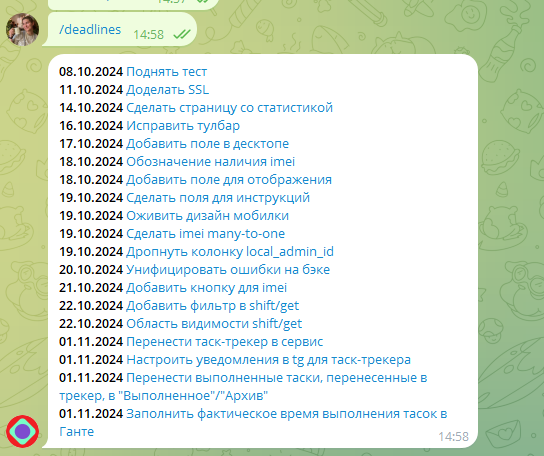

Настройка телеграм-бота
У Kaiten есть официальный телеграм-бот, в котором можно авторизоваться и настроить его под себя: @KaitenBot
Через бота можно получать уведомления из системы, а также создавать новые карточки.
Авторизация в боте

Основные команды:
- /deadlines - вывести дедлайны по всем карточкам списком. Нюанс: когда я тестировала эту фичу с другого аккаунта без админских прав, команда выводила только задачи с пометкой "Срочно". (не знаю, баг это или фича)
- /subscriptions - настройка получения уведомлений о различных событиях в разных досках. Единственный минус - на каждой доске нужна отдельная настройка уведов.
Создание карточки
Чтобы создать карточку через бота, необходимо просто написать текст заголовка карточки боту и следовать инструкциям:
Пример полученных уведомлений
При происхождении каких-то событий бот автоматически присылает Вам сообщение: 
Пример вывода дедлайнов
